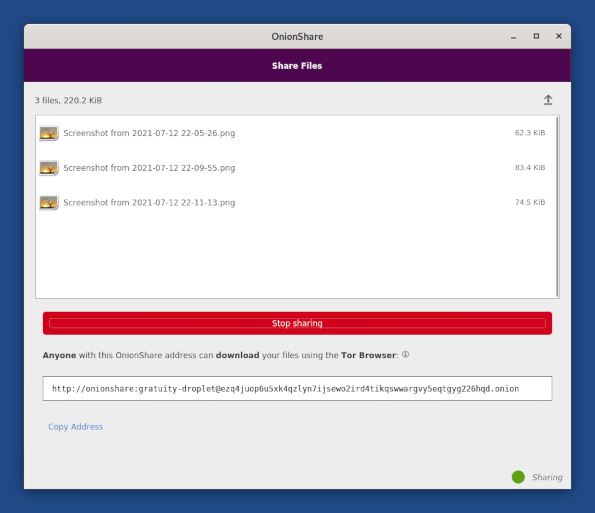

OnionShare is a tool to share files of any size securely and anonymously.
OnionShare creates an onion address that someone else can visit in Tor Browser to access the files that you want to share.
To share files with OnionShare:
Open the Files browser.
Right-click (on Mac, click with two fingers) on the files or folders that you want to share and choose Share via OnionShare. OnionShare starts.
To share more files or folders, you can either:
Drag and drop them from the Files browser onto OnionShare.
Click the Add button in OnionShare.
Click Start Sharing.
Starting to share the files can take up to several minutes.
When the files are available for sharing, an onion address appears at the bottom of OnionShare.

Send this onion address to someone else, for example, by email.
The other person can download the files by visiting the onion address in Tor Browser.
OnionShare informs you when the files are being accessed.
The files are not shared anymore as soon as you close OnionShare or shut down Tails.
To learn more about how to use OnionShare, see the OnionShare documentation.